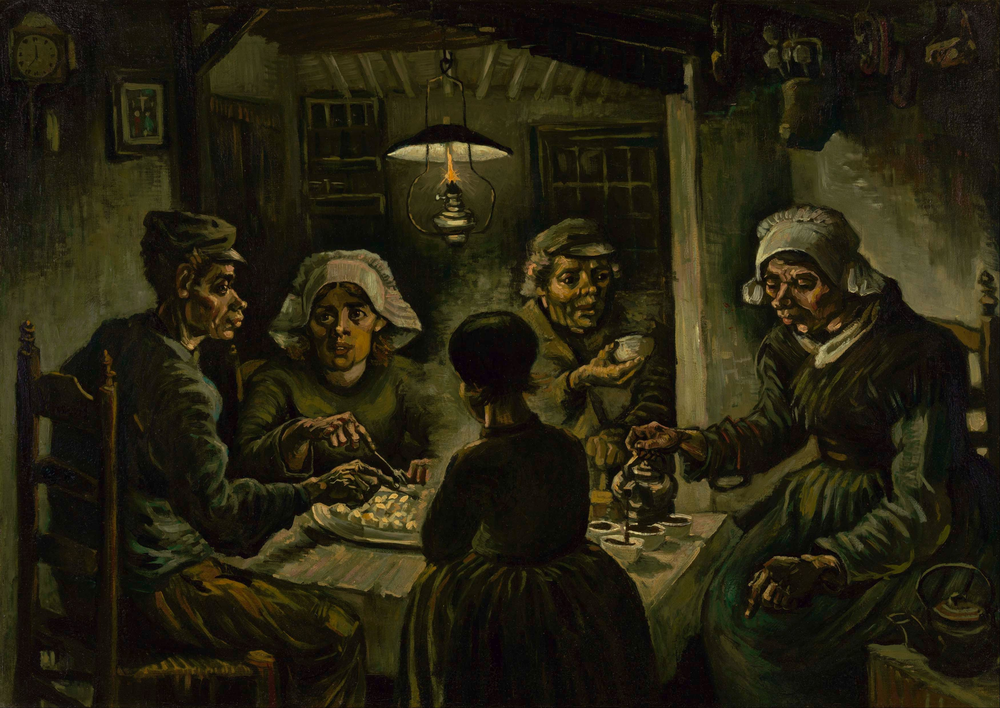
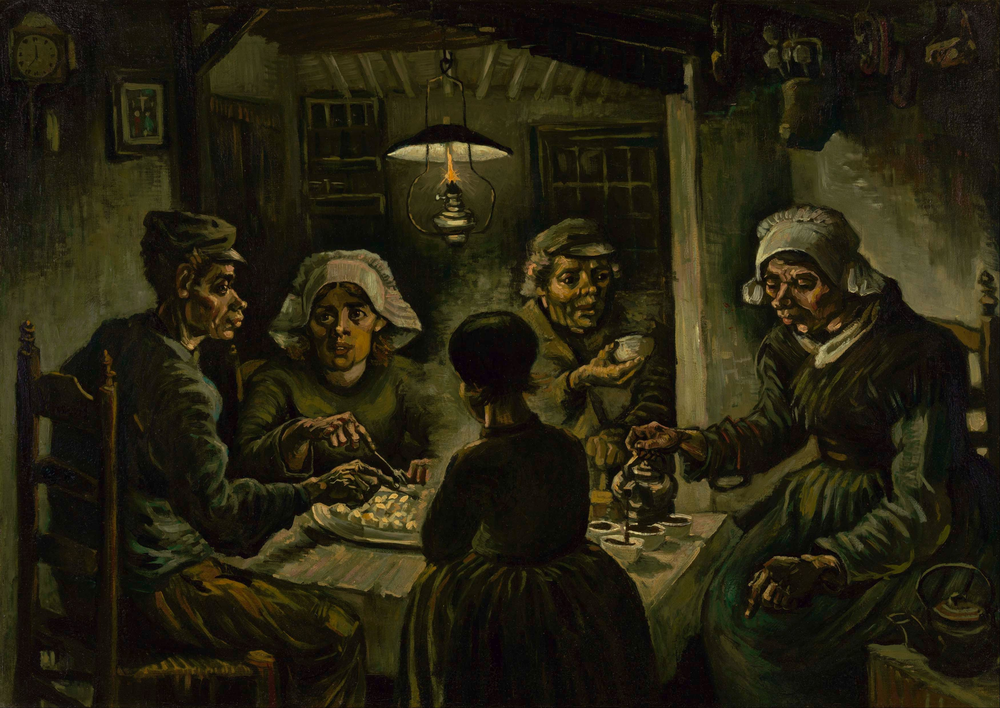

Vincent Van Gogh
Vincent van Gogh, un pittore olandese del post-impressionismo, noto per le opere emotivamente intense e i pennellate audaci. Ha lottato con problemi di salute mentale e si suicidò a soli 37 anni. Il suo lavoro, tra cui "Notte stellata" e "Girasoli", continua a influenzare artisti e appassionati d'arte in tutto il mondo.
 


 Torna alla home page
Torna alla home page